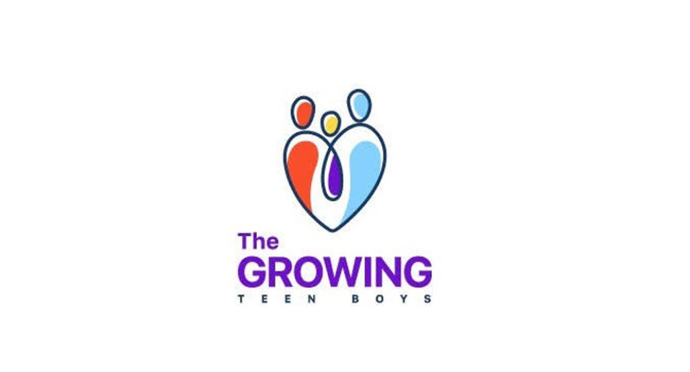

“No one leaves home,
unless home is the
mouth of a Shark”

FOR NEWS AND ARTICLES
Different journalists and credible sources have published different reports and articles
Apart from this we also help the people and families who came
before 1974 in india from bengladesh and who have rights to be
in india as indian citizens but they aren’t registered as citizen.
So we will be helping them through legal support if they have
proper documentation and proof that they came before (1994).
CONSTITUTIONAL FRAME WORK
Indian constitution gives certian
rights to refugees and immigrants who cross indian boarders
Different surveys and reports
containing data about number
of people immigrateed
With an approach of giving back to society, our volunteers are helping us by making people
aware about this
APPLY NOWhaven’t decided yet
right now thinking of
adding testimony
of people who have relieved
from our help
Graphs of migration of persecuted community in india and its states
from neighbouring country
 NAME
NAME
NAME
NAME
PAT ON THE BACK
NAME
NAME
NAME
NAME
PAT ON THE BACK
space which will contain
contribution and appreciation
of volunteers and members
space which will contain
contribution and appreciation
of volunteers and members
Addressing the Need for Better Integration
of Immigrants in India
Immigrants are present in India in large numbers.However, Many immigrants face discrimination, social exclusion, and limited access to basic services such as education, healthcare, and housing.The misery that they face in itself is a violation of human rights. Therefore, we have came with a solution in the form of this organisation which will help various NGOs who are willing to make the lives of immigrants better to connect with the immigrants and also provide them with the required facilities such as shelter, food etc.
 Join usWe are currently working for the migrant
who have came to our country and
don’t have an Indian citizenship.
We need your help to fulfill basic human needs of these immigrants until Government bodies don’t come up with a jurisdiction.we try to provide :
(1) Food
(2) Medical aid
(3) legal support